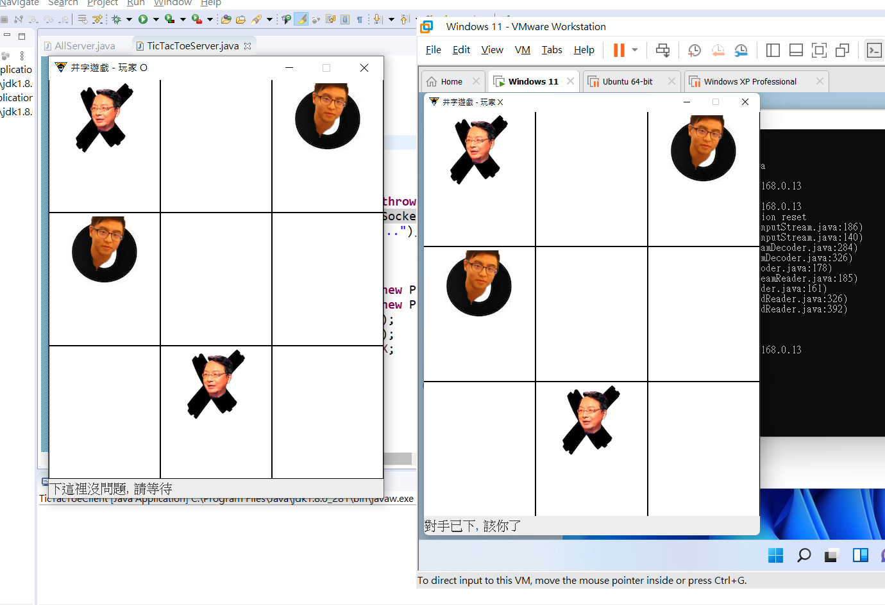
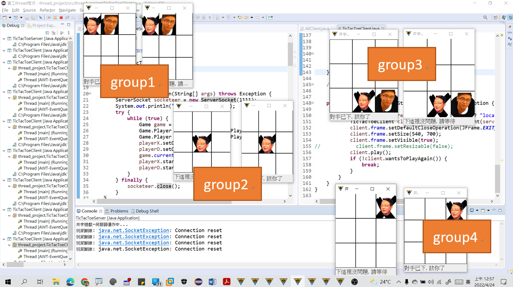

<div id="ajax-page" class="ajax-page-content">
    <div class="ajax-page-wrapper">
        <div class="ajax-page-nav">
            <div class="nav-item ajax-page-prev-next">
                <a class="ajax-page-load" href="portfolio-2.html"><i class="lnr lnr-chevron-left"></i></a>
                <a class="ajax-page-load" href="portfolio-1.html"><i class="lnr lnr-chevron-right"></i></a>
            </div>
            <div class="nav-item ajax-page-close-button">
                <a id="ajax-page-close-button" href="#"><i class="lnr lnr-cross"></i></a>
            </div>
        </div>

        <div class="ajax-page-title">
            <h1>multithread_project(java)</h1>
        </div>

        <div class="row">
            <div class="col-sm-8 col-md-8 portfolio-block">
                <div class="owl-carousel portfolio-page-carousel">
                    <div class="item">
                        
                    </div>
                    <div class="item">
                        
                    </div>
                    <div class="item">
                        
                    </div>
                    
                </div>
                
                <p><i class="fa fa-bell" aria-hidden="true"></i> 此為部分內容，詳細請點隔壁連結網址</p>

                <script type="text/javascript">
                    jQuery(document).ready(function($){
                        $('.portfolio-page-carousel').imagesLoaded(function(){
                            $('.portfolio-page-carousel').owlCarousel({
                                smartSpeed:1200,
                                items: 1,
                                loop: true,
                                dots: true,
                                nav: true,
                                navText: false,
                                margin: 10,
                                autoHeight:true
                            });
                        });
                    });
                </script>
            </div>

            <div class="col-sm-4 col-md-4 portfolio-block">
                <!-- Project Description -->
                <div class="project-description">
                    <div class="block-title">
                        <h3>說明</h3>
                    </div>
                    <ul class="project-general-info">
                        <li><p><i class="fa fa-user"></i>林俊霆</p></li>
                        <li><p><i class="fa fa-graduation-cap"></i>指導:周立德 教授</p></li>
                        <li><p><i class="fa fa-globe"></i> <a href="https://github.com/JunTingLin/multithread_project" target="_blank">multithread_project(java)</a></p></li>
                        <li><p><i class="fa fa-calendar"></i> May 18, 2022</p></li>
                    </ul>

                    <p class="text-justify">本次OS作業要繳交Thread 小程式，
                        因為對java比較熟悉，故選用java作為程式語言，用eclipse IDE開發。
                        網路上看到許多用java多執行緒實現TCP網路的socket程式設計，
                        但有鑑於求新求變，故基於TCP的架構下設計成可以「多人」連上sever「對玩」的井字小遊戲。
                        </p>
                    <!-- /Project Description -->

                    <!-- Technology -->
                    <div class="tags-block">
                        <div class="block-title">
                            <h3>技術</h3>
                        </div>
                        <ul class="tags">
                            <li><a>java</a></li>
                            <li><a>eclipse</a></li>
                            <li><a>multi thread</a></li>
                            <li><a>web socket</a></li>
                            <li><a>java swing</a></li>
                        </ul>
                    </div>
                    <!-- /Technology -->

                </div>
                <!-- Project Description -->
            </div>
        </div>
    </div>
</div>
